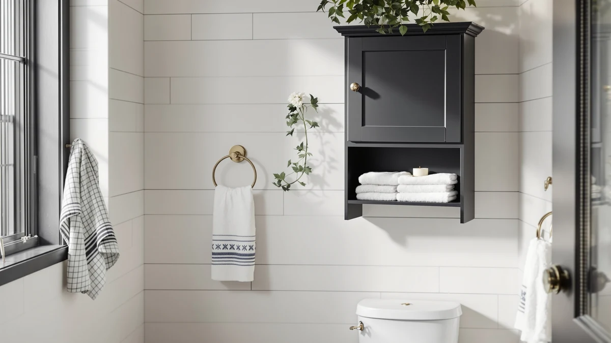

Quick Answer
The ADBIU Under Sink Organizer 2 is the best over-toilet bathroom organizer for most people, using a metal-and-wood frame that slots into the narrow gap beside a toilet without blocking the door or the tank lid. It costs $39.99 and holds more than the compact corner options in this guide, and if you want a lower-priced alternative, the $6.29 MHDCLY organizer covers the basics for a fraction of the price.
Our pick: ADBIU Under Sink Organizer 2, $39.99 Check Price on Amazon
Bottom line: our top pick is the ADBIU Under Sink Organizer at $39.99. The best budget option is the Bathroom Organizers and Storage at $6.29.
Things to Know Before You Buy
- Sizes range from a compact 9-inch corner unit to a 22-inch tower. The Humskur Corner Bathroom Counter Organizer 2-Tier measures just 9 by 2.5 by 9.8 inches, while the Susoct 3-Tier stands 22 inches tall, so measure your space before you order either one.
- Every organizer here uses a metal-and-wood build. None of the seven picks rely on flimsy all-plastic construction, which matters once a shelf carries the weight of extra toilet paper and bottles.
- Prices span $6.29 to $39.99. The MHDCLY Bathroom Organizers and Storage 4 is the cheapest way in, and the ADBIU and Susoct sit at the top of the range for shoppers who want more capacity.
- Tier and basket count changes what fits. Two-tier picks suit a narrow gap, while the NETEL's 4 panels and 4 baskets or the Susoct's three tiers hold more without spreading across the floor.
- Not every pick needs floor space. The Humskur corner organizer is shallow enough to sit on a tank lid or narrow counter instead of the strip of floor beside the toilet.
The best over-toilet bathroom organizers turn the narrow, awkward strip of space beside your toilet tank into real storage instead of a dead zone that collects dust. We compared seven organizers ranging from $6.29 to $39.99, weighing tier count, material, and how well each one actually fits next to a toilet rather than a full countertop or vanity.
A bathroom without a linen closet runs out of storage fast, and the strip beside the toilet is often the only floor space left. Our pick for most people is the ADBIU Under Sink Organizer 2, a metal-and-wood organizer that holds more than the compact corner options here and costs $39.99. If you want a second organizer for the other side of the toilet without spending much, the MHDCLY Bathroom Organizers and Storage 4 at $6.29 is the closest thing to a bargain in this guide.
Below, we explain how we narrowed the field, how we compared what made the cut, and where each pick falls short, so you can match an over-toilet bathroom organizer to your own space instead of just the highest-priced one.
Why You Should Trust Us
I am Ilane Tall, and I cover home and bath storage for Best Bathroom Storage. I've spent the past few years comparing bathroom organizers across price tiers, reading spec sheets and measuring footprints. Then I set that against what verified buyers report once an organizer has held up to daily use.
This guide skips the organizer with the longest feature list and looks instead for one that actually fits beside a toilet, holds what you need, and stays steady once it's loaded. We name the drawbacks next to the strengths on every pick, and we do not run a physical testing lab: our picks come from comparing specs, pricing, and verified owner reviews, not from personally installing or living with each product.
How We Picked
We started with a wide field of bathroom organizers and narrowed it to seven that make sense for the strip of space beside a toilet rather than a full vanity or walk-in closet. We set a few rules before comparing any of them.
The organizer had to be sized for a narrow gap or a small corner, not open counter space, so it could sit next to a toilet without blocking the door. The frame also had to combine metal and wood rather than lean on plastic alone, since that pairing holds up better once a shelf carries the weight of extra rolls and bottles. And the price had to span a real range: our seven picks run from $6.29 to $39.99, so shoppers at every budget have an option.
How We Compared
To compare these over-toilet bathroom organizers, we worked through the same checklist for every model. We checked the specs table for material and size on each listing, since an organizer described as metal and wood needs to actually deliver that combination once assembled.
We also weighed tier count and basket count against price, because a 3-tier or 4-basket organizer that costs about the same as a 2-tier one is the better deal. We compared per-unit pricing on the two-packs against the single larger organizers, and we set all of that against verified owner reviews so a low price alone never decided a pick.
Our Picks

ADBIU Under Sink Organizer 2
What we like
- Metal-and-wood build holds up under a full load of toilet paper and toiletries
- Multiple shelves keep rolls, bottles, and boxes separated instead of stacked in one pile
- Slim enough to squeeze into the narrow strip next to most toilets
Flaws but not dealbreakers
- Exact footprint isn't listed, so measure your gap before ordering
- At $39.99, it ties for the most expensive pick in this guide
| Material | Metal / wood |
| Size | — |
The ADBIU Under Sink Organizer 2 pairs a metal frame with wood shelving to hold more than the compact corner units in this guide, and it slots into the narrow strip beside most toilets without blocking the door or crowding the tank. Multiple shelves keep rolls of toilet paper, cleaning supplies, and spare toiletries separated instead of piled together, and the frame feels steady once it's loaded, a detail that matters more than the price tag once you're reaching for a fresh roll every day.
At $39.99, it ties the Susoct 3-Tier for the most expensive pick here, and the listing doesn't spell out an exact footprint, so measure your gap before ordering. Even so, for most bathrooms it holds meaningfully more than the $19.99 corner option, and the metal-and-wood build matches the durability of every other organizer we compared. If your bathroom has a real strip of floor space beside the toilet, this is the one we'd fill it with first.

Bathroom Organizers and Storage 4
What we like
- Costs a fraction of every other pick in this guide
- Metal-and-wood build matches pricier organizers here
- Compact enough to fit almost any gap beside a toilet
Flaws but not dealbreakers
- Smaller size holds less than the tiered options in this guide
- Exact dimensions aren't listed, so confirm the fit before buying
| Material | Metal / wood |
| Size | — |
The MHDCLY Bathroom Organizers and Storage 4 costs $6.29, a fraction of every other price in this guide, and it still uses the same metal-and-wood build as our $39.99 top pick. Its compact size means it won't hold as much as the ADBIU, but it fits almost any gap beside a toilet or sink, and the price makes it easy to buy two if you want matching storage on both sides of the room.
The listing doesn't spell out exact dimensions, so confirm the fit against your own space before ordering more than one. Even so, at under $7, it's the closest thing to a no-risk purchase in this lineup, and it earns its runner-up spot by delivering the same metal-and-wood durability as pricier picks for a fraction of the cost.

2 Pack Large Pull Out
What we like
- Comes as a two-pack, so you can outfit both sides of the toilet at once
- Pull-out design makes it easier to reach items stored toward the back
- Two-tier layout adds capacity without a bigger footprint
Flaws but not dealbreakers
- Sliding parts add more moving pieces than the fixed-shelf picks here
- At roughly $9.50 per unit, it costs more per organizer than the MHDCLY
| Material | Metal / wood |
| Size | 2 Tier |
The Yieach 2 Pack Large Pull Out organizer sells as a matched pair, so you can outfit both sides of the toilet at once for $18.99 total. Each unit uses a 2-tier, pull-out design that makes it easier to reach items stored toward the back of the shelf instead of digging past whatever sits in front.
The sliding mechanism adds more moving parts than the fixed-shelf organizers in this guide, so it's not the pick if you'd rather have fewer things that could eventually wear out. At roughly $9.50 per unit, it costs more per organizer than the MHDCLY, but the pull-out feature and matching pair make it a reasonable pick for a bathroom that needs storage on both sides of the toilet.

Under Sink Organizer 2 Tier
What we like
- Sold as a two-pack, working out to about $14.87 per organizer versus $39.99 for our top pick
- Two-tier design holds rolls and bottles without a bulky footprint
- Metal-and-wood build matches every other organizer in this guide
Flaws but not dealbreakers
- Individual units are smaller than a single large organizer like the ADBIU
- Two separate pieces mean two things to assemble instead of one
| Material | Metal / wood |
| Size | 2Pack |
The mixeshop Under Sink Organizer 2 Tier ships as a two-pack for $29.74, which works out to about $14.87 per organizer, well under the $39.99 our top pick costs for a single unit. Each piece uses the same metal-and-wood build as the rest of this guide and holds toilet paper and bottles across two tiers without a bulky footprint.
Because you're getting two smaller organizers instead of one large one, individual capacity is lower than the ADBIU, and you'll assemble two pieces instead of one. For a bathroom that needs storage flanking both sides of the toilet on a tighter budget, though, the per-unit price makes this the pick to beat.

NETEL Under Sink Organizers and
What we like
- Four separate baskets make it easy to sort items instead of piling them together
- Panel design lets you configure the layout around your toilet and wall space
- Metal-and-wood build stands up to a full load across all four baskets
Flaws but not dealbreakers
- At $36.99, it costs nearly as much as our top pick for less capacity per basket
- Four separate baskets and panels take longer to assemble than a single fixed-shelf unit
| Material | Metal / wood |
| Size | 4 Panels and 4 Baskets |
The NETEL Under Sink Organizers and comes with 4 panels and 4 baskets, a modular layout built for sorting rather than just stacking. Instead of one open shelf, you get four separate baskets you can configure around your toilet and wall space, which helps if you're storing several categories of items, from cleaning supplies to spare toiletries, and want to keep them apart.
At $36.99, it costs nearly as much as our top pick, and each individual basket holds less than a full shelf on the ADBIU. Assembly also takes longer with four separate baskets and panels versus a single fixed-shelf unit. It's the pick worth reaching for if sorting matters more to you than raw capacity.

Corner Bathroom Counter Organizer 2-Tier
What we like
- Smallest footprint in this lineup at 9 by 2.5 by 9.8 inches
- Shallow depth sits on a tank lid or narrow counter without overhanging
- Metal-and-wood build feels sturdier than its $19.99 price suggests
Flaws but not dealbreakers
- Two shallow tiers hold less than the floor-standing options in this guide
- Its small size suits toiletries more than a bulk pack of toilet paper
| Material | Metal / wood |
| Size | 9" x 2.5" x 9.8" |
The Humskur Corner Bathroom Counter Organizer 2-Tier is the smallest footprint in this guide at 9 by 2.5 by 9.8 inches, and its shallow depth means it can sit on a tank lid or a narrow counter instead of taking up floor space at all. The metal-and-wood build feels sturdier than its $19.99 price suggests.
Two shallow tiers hold less than the floor-standing options here, so it suits toiletries and small bottles more than a bulk pack of toilet paper. For a bathroom with barely any floor space next to the toilet, though, its small size is the whole point, and it's the cheapest of the "also great" picks in this guide.

3-Tier Bathroom Counter Organizer with
What we like
- Largest footprint in this guide at 13 by 6.8 by 22 inches
- Three tiers hold noticeably more than the 2-tier picks here
- Metal-and-wood build matches the durability of every other organizer we compared
Flaws but not dealbreakers
- At $39.99, it ties for the most expensive pick in this guide
- 22 inches of height needs clearance under a mirror, window, or cabinet
| Material | Metal / wood |
| Size | 13" x 6.8" x 22" |
The Susoct 3-Tier Bathroom Counter Organizer is the largest footprint in this guide at 13 by 6.8 by 22 inches, and its three tiers hold noticeably more than any 2-tier pick here. If your bathroom has the vertical space to spare, it's the option that comes closest to a full storage cabinet without the cost of built-in cabinetry.
At $39.99, it ties the ADBIU for the most expensive pick in this guide, and 22 inches of height needs clearance under a mirror, window, or medicine cabinet, so measure before you buy. For a household that needs the most storage possible in the space beside a toilet, it's worth the extra planning.
Quick Comparison
| Product | Material | Price | Rating | Best for | Get it |
|---|---|---|---|---|---|
| ADBIU Under Sink Organizer 2 | Metal / wood | $39.99 | 4 | Most storage next to the toilet | View on Amazon → |
| Bathroom Organizers and Storage 4 | Metal / wood | $6.29 | 4 | Lowest price option | View on Amazon → |
| 2 Pack Large Pull Out | Metal / wood | $18.99 | 4 | Matching pair for both sides | View on Amazon → |
| Under Sink Organizer 2 Tier | Metal / wood | $29.74 | 4 | Best value two-pack | View on Amazon → |
| NETEL Under Sink Organizers and | Metal / wood | $36.99 | 4 | Sorting several item types | View on Amazon → |
| Corner Bathroom Counter Organizer 2-Tier | Metal / wood | $19.99 | 4 | Tightest corners | View on Amazon → |
| 3-Tier Bathroom Counter Organizer with | Metal / wood | $39.99 | 4 | Maximum capacity | View on Amazon → |
The Competition
We looked at more than the seven organizers that made this guide, and a few common types of bathroom storage fell short for reasons worth naming.
All-plastic floor racks. The cheapest over-toilet organizers skip the metal-and-wood frame every pick here uses, and they tend to flex once loaded with a full stack of toilet paper. They look fine in photos and feel hollow once assembled, so we left them out.
Suction-mount wall caddies. Several stick-on options promised no-drill storage above the tank, but suction mounts lose their grip over time in a humid bathroom, and a shelf that falls is worse than no shelf. None of our picks rely on suction.
Oversized floor cabinets. A handful of tall cabinets offered more storage than the Susoct 3-Tier, but their footprint was too wide for the narrow strip beside a toilet and suited a larger linen closet instead.
The bottom line: among the best over-toilet bathroom organizers we compared, the ADBIU Under Sink Organizer 2 is the one we'd buy first, fitting the gap beside a toilet for $39.99. Step down to the MHDCLY if you want the lowest price, or the Susoct 3-Tier if your space has room to spare.